本体 篇 Wii U GamePad 篇 Miiverse プロデュース 篇 Miiverse 開発スタッフ 篇 インターネットブラウザー 篇 Wii U Chat 篇 New スーパーマリオブラザーズ U 篇 ZombiU（ゾンビU） 篇 Nintendo×JOYSOUND Wii カラオケ U 篇 Nintendo Land 篇 Nintendo TVii 篇 Wii Street U powered by Google 篇 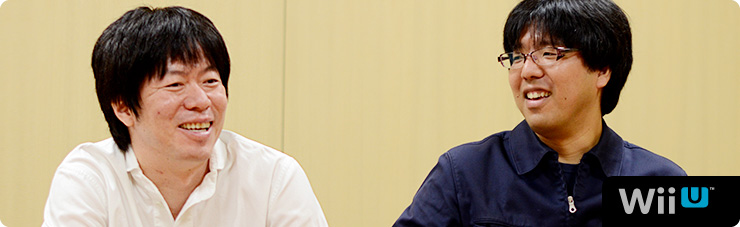 1. “共感ネットワーク” 2. ２階建てのサービス構造 3. ネットワーク方針の大転換 4. 「Wiiが街に」 岩田 一方で、今回、近藤さんは 任天堂と仕事をすることに対して、 どのように感じていましたか？ 近藤 そうですね。 うまく言えないんですけど、任天堂の方って、 意外と“ガツガツしている”というか・・・（笑）。 岩田 （笑）。少し表現を変えると、任天堂の人は 「このほうが、お客さんが喜ぶんじゃないか？」 っていうことに対して、手間をいとわず、 どん欲にやることを当たり前だと思っているんです。 だからみんながお客さんの視点になって考えて、 その商品について共感できるまで 突っ込んでいく人が多いんです。 水木 でも、はてなさんとは、 仕事に対する意識のギャップがほとんどなくて、 常に「お客さんはこのほうがうれしいだろう」って 同じ価値観で進めることができたと思います。 近藤さんとは、何回か決起集会をしたんですけど・・・。 岩田 え？ 決起集会って何回もするものなんですか？ 普通は１回でしょう（笑）。 水木 ええ？（笑） えっと・・・じゃあ “スタッフが増えたぞ集会”とか、 “デバッグがこれからはじまるぞ集会”とか・・・。 一同 （笑） 水木 まぁ、それはいいとして（笑）、 その集会のとき、 近藤さんが『うごメモ』の話をされていて、 開発の手間も、サーバー維持費もかかるとわかっていても、 「ここはプッシュだ！」といってガンガン突き進んでいって、 「ユーザーがもっと楽しめるようにどんどん開発すべきだ！」 ということを熱く語られていたことが、 すごく印象に残っているんです。 そういう価値観のはてなさんとだから、 すごくやりやすかったんです。 近藤 そう言っていただけると、非常にうれしいです。 「僕たちがネットワークサービスをつくることで、 なるべく世の中を前に進めていきたい」 ということを、常々社内で話しているんです。 あと、みんな任天堂のゲームが好きなので、 「僕たちの力でもっと前に進めることができれば それがいちばん楽しい」と思っています。 水木 そういう価値観で、 ガンガン突き進む近藤さんのイメージって、 ・・・あえて言いますよ？（笑） 殿が先に突っ走って、家来があとから追っかけながら 「と、殿、ご乱心をっ！」 みたいに止めるみたいな・・・。 そんな感じがしていました。 すみません！（笑） 一同 （笑） 岩田 でもね、何か新しいことをはじめるときって、 社内には「殿、ご乱心をっ！」って 思う人はいるものだと思いますよ。 近藤 そうですよね（笑）。 水木 確かに、僕らは『Miiverse』を推進する側でしたけど、 「ご、ご乱心をっ！」くらいに思っている人たちは 社内にもきっといたと思います。 岩田 いろんな人が、「運営が大変になりますよ」って、 ずいぶん心配していたと思います。 水木 はい。でも基本的にみなさん、 協力的に考えてくれて、 何かしらのかたちで応援してくれました。 「もっとこうあるべきじゃないか？」 といったアドバイスも含めて、 「進めることに反対」という意見はなかったです。 岩田 じゃあ、今日の最後に 『Miiverse』はゲームをどう変えると思うか、 近藤さんからいいですか？ 近藤 はい。僕が起動画面の 「わらわら広場」を見て感じたことは、 「ああ、Wiiが街になったなぁ」ということです。 いままで“家の中”くらいの範囲だったのが、 Wii Uで広がって、知っている人も知らない人も ワーッといるみたいな。そういう意味で、 本当に「わらわら広場」はびっくりしたんです。 実際、起動画面だけを見て楽しむような人が 多いんじゃないでしょうか。 「よく、カフェとかで人の雑踏を眺めるみたいに、 そういう楽しみも生まれるんじゃないか」 そう思っています。 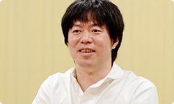 岩田 ちなみに、あれを起動画面にしたのは、 『Wiiの間』でどんなにおもてなしの準備をしていても、 起動していただかないことには目にも入らないことを、 わたしと水木さんが思い知ったからでもあるんです。 だから『Miiverse』では、 Wii Uの電源を入れただけで 何か起こるようにしたかったんですね。 水木 『Wiiの間』でも、 Miiが居間でくつろいでいる様子は、 お客さんにわりと気に入っていただけたみたいでした。 岩田 家族と離れて暮らしている人が、 『Wiiの間』の居間にいっしょにいる 大切な家族の姿を眺めることで、 癒やされたりしていたという声をいただいていました。 でも、今度はそれをもう一段、 ちょっと違うかたちでお見せできそうです。 近藤 あの、いわゆる“ソーシャル化”というのは、 ゲームの世界がインターネットでつながることによって、 一つひとつの娯楽やコンテンツに対して、 どう社会性を持たせていくのかが、 大きなテーマだと思うんです。 岩田 はい。ネットワークの向こう側に本当の人がいて、 しかも自分と価値観を共有する人がいたら、 「何が起こるか？」ということですね。 近藤 そうです。いままさに、 「任天堂のゲームが社会とつながって、 広がっていく革命的瞬間なんじゃないか？」 と、僕は思っています。 本質は“ゲームも面白いけど、人も面白い”ということで、 「人と楽しめるほうがもっと面白いかもしれない」 というお客さんに対する提案なんです。 これから『Miiverse』を使ってくれる方たちにとって、 「いちばん楽しんでもらえるものができた」と思うので、 その広がりをぜひ、楽しんでいただけるとうれしいです。 岩田 生粋のゲーム屋と、ゲームを愛するウェブ屋さんが 出会ったからこそ、生まれたサービスになりましたね。 近藤 はい（笑）。 水木 僕はですね、ゲームというのは 言語よりもプレイが優先されるものなので、 “世界がひとつになれる娯楽”だと思っているんです。 でもいままでは、少なくとも ゲーム機のネットワークは比較的言語主体で、 あまり国境を越えられていなかったと思うんです。 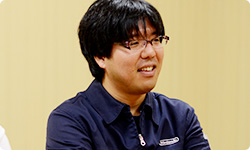 岩田 外国語だと、よくわからないですからね。 水木 はい、でも今回は手書きでコメントを掲載したり、 Miiのアイコンの表情を変えられたりして、 言葉に頼らないコミュニケーションが可能です。 そうした「何となく気持ちが伝わる仕組みにしたい」 ということを最初から考えていたので、 「いままで以上にゲームを通じて世界中の人と、 言語の壁を越えて交流してほしいなぁ」と 思っています。 岩田 はい、ありがとうございます。 わたしは『Miiverse』の登場前と登場後で、 「たとえ家でひとりきりで遊んでいたとしても、 ゲームを通じて“１人じゃない”と 共感しあえるようになる」ということが 最も大きな変化になるのではないか、と思っています。 自分と価値観を共有できる人に出会えて、 面白いゲームにどんどん出会えるようになって、 あるとき「本当に昔、これがなかったの？」 って言われるようにしたいなぁ、と思っています。 水木 本当にそうですね。 岩田 まあでも、ネットワークサービスは はじまってからが勝負なので、 本格開発はこれからですからね。 近藤 はい。スタートしてからということで（笑）。 岩田 頑張りましょう。 今日はありがとうございました。 一同 ありがとうございました。 3. ネットワーク方針の大転換 → Miiverse 開発スタッフ 篇
Wii U GamePad 篇 Miiverse プロデュース 篇 Miiverse 開発スタッフ 篇 インターネットブラウザー 篇 Wii U Chat 篇 New スーパーマリオブラザーズ U 篇 ZombiU（ゾンビU） 篇 Nintendo×JOYSOUND Wii カラオケ U 篇 Nintendo Land 篇 Nintendo TVii 篇 Wii Street U powered by Google 篇 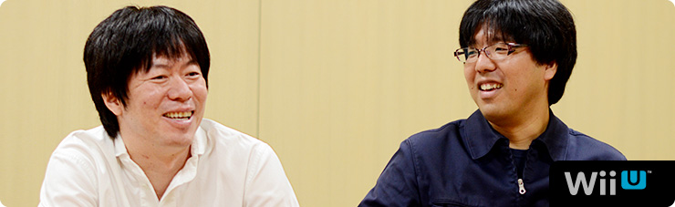 1. “共感ネットワーク” 2. ２階建てのサービス構造 3. ネットワーク方針の大転換 4. 「Wiiが街に」 岩田 一方で、今回、近藤さんは 任天堂と仕事をすることに対して、 どのように感じていましたか？ 近藤 そうですね。 うまく言えないんですけど、任天堂の方って、 意外と“ガツガツしている”というか・・・（笑）。 岩田 （笑）。少し表現を変えると、任天堂の人は 「このほうが、お客さんが喜ぶんじゃないか？」 っていうことに対して、手間をいとわず、 どん欲にやることを当たり前だと思っているんです。 だからみんながお客さんの視点になって考えて、 その商品について共感できるまで 突っ込んでいく人が多いんです。 水木 でも、はてなさんとは、 仕事に対する意識のギャップがほとんどなくて、 常に「お客さんはこのほうがうれしいだろう」って 同じ価値観で進めることができたと思います。 近藤さんとは、何回か決起集会をしたんですけど・・・。 岩田 え？ 決起集会って何回もするものなんですか？ 普通は１回でしょう（笑）。 水木 ええ？（笑） えっと・・・じゃあ “スタッフが増えたぞ集会”とか、 “デバッグがこれからはじまるぞ集会”とか・・・。 一同 （笑） 水木 まぁ、それはいいとして（笑）、 その集会のとき、 近藤さんが『うごメモ』の話をされていて、 開発の手間も、サーバー維持費もかかるとわかっていても、 「ここはプッシュだ！」といってガンガン突き進んでいって、 「ユーザーがもっと楽しめるようにどんどん開発すべきだ！」 ということを熱く語られていたことが、 すごく印象に残っているんです。 そういう価値観のはてなさんとだから、 すごくやりやすかったんです。 近藤 そう言っていただけると、非常にうれしいです。 「僕たちがネットワークサービスをつくることで、 なるべく世の中を前に進めていきたい」 ということを、常々社内で話しているんです。 あと、みんな任天堂のゲームが好きなので、 「僕たちの力でもっと前に進めることができれば それがいちばん楽しい」と思っています。 水木 そういう価値観で、 ガンガン突き進む近藤さんのイメージって、 ・・・あえて言いますよ？（笑） 殿が先に突っ走って、家来があとから追っかけながら 「と、殿、ご乱心をっ！」 みたいに止めるみたいな・・・。 そんな感じがしていました。 すみません！（笑） 一同 （笑） 岩田 でもね、何か新しいことをはじめるときって、 社内には「殿、ご乱心をっ！」って 思う人はいるものだと思いますよ。 近藤 そうですよね（笑）。 水木 確かに、僕らは『Miiverse』を推進する側でしたけど、 「ご、ご乱心をっ！」くらいに思っている人たちは 社内にもきっといたと思います。 岩田 いろんな人が、「運営が大変になりますよ」って、 ずいぶん心配していたと思います。 水木 はい。でも基本的にみなさん、 協力的に考えてくれて、 何かしらのかたちで応援してくれました。 「もっとこうあるべきじゃないか？」 といったアドバイスも含めて、 「進めることに反対」という意見はなかったです。 岩田 じゃあ、今日の最後に 『Miiverse』はゲームをどう変えると思うか、 近藤さんからいいですか？ 近藤 はい。僕が起動画面の 「わらわら広場」を見て感じたことは、 「ああ、Wiiが街になったなぁ」ということです。 いままで“家の中”くらいの範囲だったのが、 Wii Uで広がって、知っている人も知らない人も ワーッといるみたいな。そういう意味で、 本当に「わらわら広場」はびっくりしたんです。 実際、起動画面だけを見て楽しむような人が 多いんじゃないでしょうか。 「よく、カフェとかで人の雑踏を眺めるみたいに、 そういう楽しみも生まれるんじゃないか」 そう思っています。 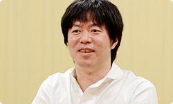 岩田 ちなみに、あれを起動画面にしたのは、 『Wiiの間』でどんなにおもてなしの準備をしていても、 起動していただかないことには目にも入らないことを、 わたしと水木さんが思い知ったからでもあるんです。 だから『Miiverse』では、 Wii Uの電源を入れただけで 何か起こるようにしたかったんですね。 水木 『Wiiの間』でも、 Miiが居間でくつろいでいる様子は、 お客さんにわりと気に入っていただけたみたいでした。 岩田 家族と離れて暮らしている人が、 『Wiiの間』の居間にいっしょにいる 大切な家族の姿を眺めることで、 癒やされたりしていたという声をいただいていました。 でも、今度はそれをもう一段、 ちょっと違うかたちでお見せできそうです。 近藤 あの、いわゆる“ソーシャル化”というのは、 ゲームの世界がインターネットでつながることによって、 一つひとつの娯楽やコンテンツに対して、 どう社会性を持たせていくのかが、 大きなテーマだと思うんです。 岩田 はい。ネットワークの向こう側に本当の人がいて、 しかも自分と価値観を共有する人がいたら、 「何が起こるか？」ということですね。 近藤 そうです。いままさに、 「任天堂のゲームが社会とつながって、 広がっていく革命的瞬間なんじゃないか？」 と、僕は思っています。 本質は“ゲームも面白いけど、人も面白い”ということで、 「人と楽しめるほうがもっと面白いかもしれない」 というお客さんに対する提案なんです。 これから『Miiverse』を使ってくれる方たちにとって、 「いちばん楽しんでもらえるものができた」と思うので、 その広がりをぜひ、楽しんでいただけるとうれしいです。 岩田 生粋のゲーム屋と、ゲームを愛するウェブ屋さんが 出会ったからこそ、生まれたサービスになりましたね。 近藤 はい（笑）。 水木 僕はですね、ゲームというのは 言語よりもプレイが優先されるものなので、 “世界がひとつになれる娯楽”だと思っているんです。 でもいままでは、少なくとも ゲーム機のネットワークは比較的言語主体で、 あまり国境を越えられていなかったと思うんです。 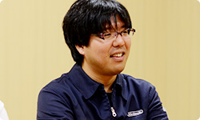 岩田 外国語だと、よくわからないですからね。 水木 はい、でも今回は手書きでコメントを掲載したり、 Miiのアイコンの表情を変えられたりして、 言葉に頼らないコミュニケーションが可能です。 そうした「何となく気持ちが伝わる仕組みにしたい」 ということを最初から考えていたので、 「いままで以上にゲームを通じて世界中の人と、 言語の壁を越えて交流してほしいなぁ」と 思っています。 岩田 はい、ありがとうございます。 わたしは『Miiverse』の登場前と登場後で、 「たとえ家でひとりきりで遊んでいたとしても、 ゲームを通じて“１人じゃない”と 共感しあえるようになる」ということが 最も大きな変化になるのではないか、と思っています。 自分と価値観を共有できる人に出会えて、 面白いゲームにどんどん出会えるようになって、 あるとき「本当に昔、これがなかったの？」 って言われるようにしたいなぁ、と思っています。 水木 本当にそうですね。 岩田 まあでも、ネットワークサービスは はじまってからが勝負なので、 本格開発はこれからですからね。 近藤 はい。スタートしてからということで（笑）。 岩田 頑張りましょう。 今日はありがとうございました。 一同 ありがとうございました。 3. ネットワーク方針の大転換 → Miiverse 開発スタッフ 篇
Miiverse プロデュース 篇 Miiverse 開発スタッフ 篇 インターネットブラウザー 篇 Wii U Chat 篇 New スーパーマリオブラザーズ U 篇 ZombiU（ゾンビU） 篇 Nintendo×JOYSOUND Wii カラオケ U 篇 Nintendo Land 篇 Nintendo TVii 篇 Wii Street U powered by Google 篇 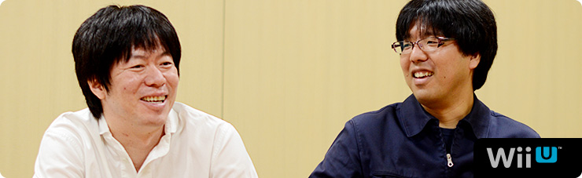 1. “共感ネットワーク” 2. ２階建てのサービス構造 3. ネットワーク方針の大転換 4. 「Wiiが街に」 岩田 一方で、今回、近藤さんは 任天堂と仕事をすることに対して、 どのように感じていましたか？ 近藤 そうですね。 うまく言えないんですけど、任天堂の方って、 意外と“ガツガツしている”というか・・・（笑）。 岩田 （笑）。少し表現を変えると、任天堂の人は 「このほうが、お客さんが喜ぶんじゃないか？」 っていうことに対して、手間をいとわず、 どん欲にやることを当たり前だと思っているんです。 だからみんながお客さんの視点になって考えて、 その商品について共感できるまで 突っ込んでいく人が多いんです。 水木 でも、はてなさんとは、 仕事に対する意識のギャップがほとんどなくて、 常に「お客さんはこのほうがうれしいだろう」って 同じ価値観で進めることができたと思います。 近藤さんとは、何回か決起集会をしたんですけど・・・。 岩田 え？ 決起集会って何回もするものなんですか？ 普通は１回でしょう（笑）。 水木 ええ？（笑） えっと・・・じゃあ “スタッフが増えたぞ集会”とか、 “デバッグがこれからはじまるぞ集会”とか・・・。 一同 （笑） 水木 まぁ、それはいいとして（笑）、 その集会のとき、 近藤さんが『うごメモ』の話をされていて、 開発の手間も、サーバー維持費もかかるとわかっていても、 「ここはプッシュだ！」といってガンガン突き進んでいって、 「ユーザーがもっと楽しめるようにどんどん開発すべきだ！」 ということを熱く語られていたことが、 すごく印象に残っているんです。 そういう価値観のはてなさんとだから、 すごくやりやすかったんです。 近藤 そう言っていただけると、非常にうれしいです。 「僕たちがネットワークサービスをつくることで、 なるべく世の中を前に進めていきたい」 ということを、常々社内で話しているんです。 あと、みんな任天堂のゲームが好きなので、 「僕たちの力でもっと前に進めることができれば それがいちばん楽しい」と思っています。 水木 そういう価値観で、 ガンガン突き進む近藤さんのイメージって、 ・・・あえて言いますよ？（笑） 殿が先に突っ走って、家来があとから追っかけながら 「と、殿、ご乱心をっ！」 みたいに止めるみたいな・・・。 そんな感じがしていました。 すみません！（笑） 一同 （笑） 岩田 でもね、何か新しいことをはじめるときって、 社内には「殿、ご乱心をっ！」って 思う人はいるものだと思いますよ。 近藤 そうですよね（笑）。 水木 確かに、僕らは『Miiverse』を推進する側でしたけど、 「ご、ご乱心をっ！」くらいに思っている人たちは 社内にもきっといたと思います。 岩田 いろんな人が、「運営が大変になりますよ」って、 ずいぶん心配していたと思います。 水木 はい。でも基本的にみなさん、 協力的に考えてくれて、 何かしらのかたちで応援してくれました。 「もっとこうあるべきじゃないか？」 といったアドバイスも含めて、 「進めることに反対」という意見はなかったです。 岩田 じゃあ、今日の最後に 『Miiverse』はゲームをどう変えると思うか、 近藤さんからいいですか？ 近藤 はい。僕が起動画面の 「わらわら広場」を見て感じたことは、 「ああ、Wiiが街になったなぁ」ということです。 いままで“家の中”くらいの範囲だったのが、 Wii Uで広がって、知っている人も知らない人も ワーッといるみたいな。そういう意味で、 本当に「わらわら広場」はびっくりしたんです。 実際、起動画面だけを見て楽しむような人が 多いんじゃないでしょうか。 「よく、カフェとかで人の雑踏を眺めるみたいに、 そういう楽しみも生まれるんじゃないか」 そう思っています。 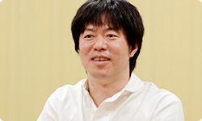 岩田 ちなみに、あれを起動画面にしたのは、 『Wiiの間』でどんなにおもてなしの準備をしていても、 起動していただかないことには目にも入らないことを、 わたしと水木さんが思い知ったからでもあるんです。 だから『Miiverse』では、 Wii Uの電源を入れただけで 何か起こるようにしたかったんですね。 水木 『Wiiの間』でも、 Miiが居間でくつろいでいる様子は、 お客さんにわりと気に入っていただけたみたいでした。 岩田 家族と離れて暮らしている人が、 『Wiiの間』の居間にいっしょにいる 大切な家族の姿を眺めることで、 癒やされたりしていたという声をいただいていました。 でも、今度はそれをもう一段、 ちょっと違うかたちでお見せできそうです。 近藤 あの、いわゆる“ソーシャル化”というのは、 ゲームの世界がインターネットでつながることによって、 一つひとつの娯楽やコンテンツに対して、 どう社会性を持たせていくのかが、 大きなテーマだと思うんです。 岩田 はい。ネットワークの向こう側に本当の人がいて、 しかも自分と価値観を共有する人がいたら、 「何が起こるか？」ということですね。 近藤 そうです。いままさに、 「任天堂のゲームが社会とつながって、 広がっていく革命的瞬間なんじゃないか？」 と、僕は思っています。 本質は“ゲームも面白いけど、人も面白い”ということで、 「人と楽しめるほうがもっと面白いかもしれない」 というお客さんに対する提案なんです。 これから『Miiverse』を使ってくれる方たちにとって、 「いちばん楽しんでもらえるものができた」と思うので、 その広がりをぜひ、楽しんでいただけるとうれしいです。 岩田 生粋のゲーム屋と、ゲームを愛するウェブ屋さんが 出会ったからこそ、生まれたサービスになりましたね。 近藤 はい（笑）。 水木 僕はですね、ゲームというのは 言語よりもプレイが優先されるものなので、 “世界がひとつになれる娯楽”だと思っているんです。 でもいままでは、少なくとも ゲーム機のネットワークは比較的言語主体で、 あまり国境を越えられていなかったと思うんです。 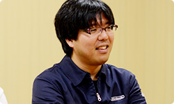 岩田 外国語だと、よくわからないですからね。 水木 はい、でも今回は手書きでコメントを掲載したり、 Miiのアイコンの表情を変えられたりして、 言葉に頼らないコミュニケーションが可能です。 そうした「何となく気持ちが伝わる仕組みにしたい」 ということを最初から考えていたので、 「いままで以上にゲームを通じて世界中の人と、 言語の壁を越えて交流してほしいなぁ」と 思っています。 岩田 はい、ありがとうございます。 わたしは『Miiverse』の登場前と登場後で、 「たとえ家でひとりきりで遊んでいたとしても、 ゲームを通じて“１人じゃない”と 共感しあえるようになる」ということが 最も大きな変化になるのではないか、と思っています。 自分と価値観を共有できる人に出会えて、 面白いゲームにどんどん出会えるようになって、 あるとき「本当に昔、これがなかったの？」 って言われるようにしたいなぁ、と思っています。 水木 本当にそうですね。 岩田 まあでも、ネットワークサービスは はじまってからが勝負なので、 本格開発はこれからですからね。 近藤 はい。スタートしてからということで（笑）。 岩田 頑張りましょう。 今日はありがとうございました。 一同 ありがとうございました。 3. ネットワーク方針の大転換 → Miiverse 開発スタッフ 篇
Miiverse 開発スタッフ 篇 インターネットブラウザー 篇 Wii U Chat 篇 New スーパーマリオブラザーズ U 篇 ZombiU（ゾンビU） 篇 Nintendo×JOYSOUND Wii カラオケ U 篇 Nintendo Land 篇 Nintendo TVii 篇 Wii Street U powered by Google 篇 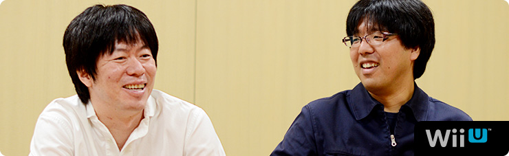 1. “共感ネットワーク” 2. ２階建てのサービス構造 3. ネットワーク方針の大転換 4. 「Wiiが街に」 岩田 一方で、今回、近藤さんは 任天堂と仕事をすることに対して、 どのように感じていましたか？ 近藤 そうですね。 うまく言えないんですけど、任天堂の方って、 意外と“ガツガツしている”というか・・・（笑）。 岩田 （笑）。少し表現を変えると、任天堂の人は 「このほうが、お客さんが喜ぶんじゃないか？」 っていうことに対して、手間をいとわず、 どん欲にやることを当たり前だと思っているんです。 だからみんながお客さんの視点になって考えて、 その商品について共感できるまで 突っ込んでいく人が多いんです。 水木 でも、はてなさんとは、 仕事に対する意識のギャップがほとんどなくて、 常に「お客さんはこのほうがうれしいだろう」って 同じ価値観で進めることができたと思います。 近藤さんとは、何回か決起集会をしたんですけど・・・。 岩田 え？ 決起集会って何回もするものなんですか？ 普通は１回でしょう（笑）。 水木 ええ？（笑） えっと・・・じゃあ “スタッフが増えたぞ集会”とか、 “デバッグがこれからはじまるぞ集会”とか・・・。 一同 （笑） 水木 まぁ、それはいいとして（笑）、 その集会のとき、 近藤さんが『うごメモ』の話をされていて、 開発の手間も、サーバー維持費もかかるとわかっていても、 「ここはプッシュだ！」といってガンガン突き進んでいって、 「ユーザーがもっと楽しめるようにどんどん開発すべきだ！」 ということを熱く語られていたことが、 すごく印象に残っているんです。 そういう価値観のはてなさんとだから、 すごくやりやすかったんです。 近藤 そう言っていただけると、非常にうれしいです。 「僕たちがネットワークサービスをつくることで、 なるべく世の中を前に進めていきたい」 ということを、常々社内で話しているんです。 あと、みんな任天堂のゲームが好きなので、 「僕たちの力でもっと前に進めることができれば それがいちばん楽しい」と思っています。 水木 そういう価値観で、 ガンガン突き進む近藤さんのイメージって、 ・・・あえて言いますよ？（笑） 殿が先に突っ走って、家来があとから追っかけながら 「と、殿、ご乱心をっ！」 みたいに止めるみたいな・・・。 そんな感じがしていました。 すみません！（笑） 一同 （笑） 岩田 でもね、何か新しいことをはじめるときって、 社内には「殿、ご乱心をっ！」って 思う人はいるものだと思いますよ。 近藤 そうですよね（笑）。 水木 確かに、僕らは『Miiverse』を推進する側でしたけど、 「ご、ご乱心をっ！」くらいに思っている人たちは 社内にもきっといたと思います。 岩田 いろんな人が、「運営が大変になりますよ」って、 ずいぶん心配していたと思います。 水木 はい。でも基本的にみなさん、 協力的に考えてくれて、 何かしらのかたちで応援してくれました。 「もっとこうあるべきじゃないか？」 といったアドバイスも含めて、 「進めることに反対」という意見はなかったです。 岩田 じゃあ、今日の最後に 『Miiverse』はゲームをどう変えると思うか、 近藤さんからいいですか？ 近藤 はい。僕が起動画面の 「わらわら広場」を見て感じたことは、 「ああ、Wiiが街になったなぁ」ということです。 いままで“家の中”くらいの範囲だったのが、 Wii Uで広がって、知っている人も知らない人も ワーッといるみたいな。そういう意味で、 本当に「わらわら広場」はびっくりしたんです。 実際、起動画面だけを見て楽しむような人が 多いんじゃないでしょうか。 「よく、カフェとかで人の雑踏を眺めるみたいに、 そういう楽しみも生まれるんじゃないか」 そう思っています。 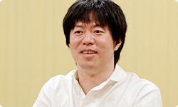 岩田 ちなみに、あれを起動画面にしたのは、 『Wiiの間』でどんなにおもてなしの準備をしていても、 起動していただかないことには目にも入らないことを、 わたしと水木さんが思い知ったからでもあるんです。 だから『Miiverse』では、 Wii Uの電源を入れただけで 何か起こるようにしたかったんですね。 水木 『Wiiの間』でも、 Miiが居間でくつろいでいる様子は、 お客さんにわりと気に入っていただけたみたいでした。 岩田 家族と離れて暮らしている人が、 『Wiiの間』の居間にいっしょにいる 大切な家族の姿を眺めることで、 癒やされたりしていたという声をいただいていました。 でも、今度はそれをもう一段、 ちょっと違うかたちでお見せできそうです。 近藤 あの、いわゆる“ソーシャル化”というのは、 ゲームの世界がインターネットでつながることによって、 一つひとつの娯楽やコンテンツに対して、 どう社会性を持たせていくのかが、 大きなテーマだと思うんです。 岩田 はい。ネットワークの向こう側に本当の人がいて、 しかも自分と価値観を共有する人がいたら、 「何が起こるか？」ということですね。 近藤 そうです。いままさに、 「任天堂のゲームが社会とつながって、 広がっていく革命的瞬間なんじゃないか？」 と、僕は思っています。 本質は“ゲームも面白いけど、人も面白い”ということで、 「人と楽しめるほうがもっと面白いかもしれない」 というお客さんに対する提案なんです。 これから『Miiverse』を使ってくれる方たちにとって、 「いちばん楽しんでもらえるものができた」と思うので、 その広がりをぜひ、楽しんでいただけるとうれしいです。 岩田 生粋のゲーム屋と、ゲームを愛するウェブ屋さんが 出会ったからこそ、生まれたサービスになりましたね。 近藤 はい（笑）。 水木 僕はですね、ゲームというのは 言語よりもプレイが優先されるものなので、 “世界がひとつになれる娯楽”だと思っているんです。 でもいままでは、少なくとも ゲーム機のネットワークは比較的言語主体で、 あまり国境を越えられていなかったと思うんです。 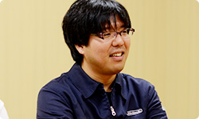 岩田 外国語だと、よくわからないですからね。 水木 はい、でも今回は手書きでコメントを掲載したり、 Miiのアイコンの表情を変えられたりして、 言葉に頼らないコミュニケーションが可能です。 そうした「何となく気持ちが伝わる仕組みにしたい」 ということを最初から考えていたので、 「いままで以上にゲームを通じて世界中の人と、 言語の壁を越えて交流してほしいなぁ」と 思っています。 岩田 はい、ありがとうございます。 わたしは『Miiverse』の登場前と登場後で、 「たとえ家でひとりきりで遊んでいたとしても、 ゲームを通じて“１人じゃない”と 共感しあえるようになる」ということが 最も大きな変化になるのではないか、と思っています。 自分と価値観を共有できる人に出会えて、 面白いゲームにどんどん出会えるようになって、 あるとき「本当に昔、これがなかったの？」 って言われるようにしたいなぁ、と思っています。 水木 本当にそうですね。 岩田 まあでも、ネットワークサービスは はじまってからが勝負なので、 本格開発はこれからですからね。 近藤 はい。スタートしてからということで（笑）。 岩田 頑張りましょう。 今日はありがとうございました。 一同 ありがとうございました。 3. ネットワーク方針の大転換 → Miiverse 開発スタッフ 篇
インターネットブラウザー 篇 Wii U Chat 篇 New スーパーマリオブラザーズ U 篇 ZombiU（ゾンビU） 篇 Nintendo×JOYSOUND Wii カラオケ U 篇 Nintendo Land 篇 Nintendo TVii 篇 Wii Street U powered by Google 篇 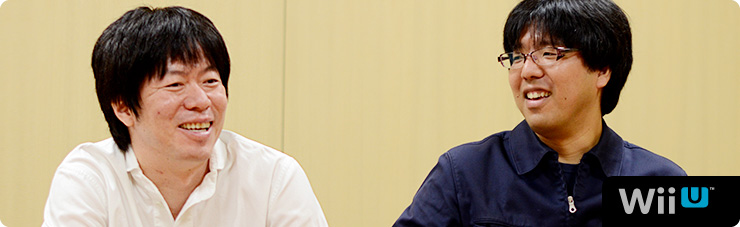 1. “共感ネットワーク” 2. ２階建てのサービス構造 3. ネットワーク方針の大転換 4. 「Wiiが街に」 岩田 一方で、今回、近藤さんは 任天堂と仕事をすることに対して、 どのように感じていましたか？ 近藤 そうですね。 うまく言えないんですけど、任天堂の方って、 意外と“ガツガツしている”というか・・・（笑）。 岩田 （笑）。少し表現を変えると、任天堂の人は 「このほうが、お客さんが喜ぶんじゃないか？」 っていうことに対して、手間をいとわず、 どん欲にやることを当たり前だと思っているんです。 だからみんながお客さんの視点になって考えて、 その商品について共感できるまで 突っ込んでいく人が多いんです。 水木 でも、はてなさんとは、 仕事に対する意識のギャップがほとんどなくて、 常に「お客さんはこのほうがうれしいだろう」って 同じ価値観で進めることができたと思います。 近藤さんとは、何回か決起集会をしたんですけど・・・。 岩田 え？ 決起集会って何回もするものなんですか？ 普通は１回でしょう（笑）。 水木 ええ？（笑） えっと・・・じゃあ “スタッフが増えたぞ集会”とか、 “デバッグがこれからはじまるぞ集会”とか・・・。 一同 （笑） 水木 まぁ、それはいいとして（笑）、 その集会のとき、 近藤さんが『うごメモ』の話をされていて、 開発の手間も、サーバー維持費もかかるとわかっていても、 「ここはプッシュだ！」といってガンガン突き進んでいって、 「ユーザーがもっと楽しめるようにどんどん開発すべきだ！」 ということを熱く語られていたことが、 すごく印象に残っているんです。 そういう価値観のはてなさんとだから、 すごくやりやすかったんです。 近藤 そう言っていただけると、非常にうれしいです。 「僕たちがネットワークサービスをつくることで、 なるべく世の中を前に進めていきたい」 ということを、常々社内で話しているんです。 あと、みんな任天堂のゲームが好きなので、 「僕たちの力でもっと前に進めることができれば それがいちばん楽しい」と思っています。 水木 そういう価値観で、 ガンガン突き進む近藤さんのイメージって、 ・・・あえて言いますよ？（笑） 殿が先に突っ走って、家来があとから追っかけながら 「と、殿、ご乱心をっ！」 みたいに止めるみたいな・・・。 そんな感じがしていました。 すみません！（笑） 一同 （笑） 岩田 でもね、何か新しいことをはじめるときって、 社内には「殿、ご乱心をっ！」って 思う人はいるものだと思いますよ。 近藤 そうですよね（笑）。 水木 確かに、僕らは『Miiverse』を推進する側でしたけど、 「ご、ご乱心をっ！」くらいに思っている人たちは 社内にもきっといたと思います。 岩田 いろんな人が、「運営が大変になりますよ」って、 ずいぶん心配していたと思います。 水木 はい。でも基本的にみなさん、 協力的に考えてくれて、 何かしらのかたちで応援してくれました。 「もっとこうあるべきじゃないか？」 といったアドバイスも含めて、 「進めることに反対」という意見はなかったです。 岩田 じゃあ、今日の最後に 『Miiverse』はゲームをどう変えると思うか、 近藤さんからいいですか？ 近藤 はい。僕が起動画面の 「わらわら広場」を見て感じたことは、 「ああ、Wiiが街になったなぁ」ということです。 いままで“家の中”くらいの範囲だったのが、 Wii Uで広がって、知っている人も知らない人も ワーッといるみたいな。そういう意味で、 本当に「わらわら広場」はびっくりしたんです。 実際、起動画面だけを見て楽しむような人が 多いんじゃないでしょうか。 「よく、カフェとかで人の雑踏を眺めるみたいに、 そういう楽しみも生まれるんじゃないか」 そう思っています。 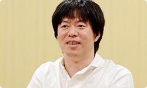 岩田 ちなみに、あれを起動画面にしたのは、 『Wiiの間』でどんなにおもてなしの準備をしていても、 起動していただかないことには目にも入らないことを、 わたしと水木さんが思い知ったからでもあるんです。 だから『Miiverse』では、 Wii Uの電源を入れただけで 何か起こるようにしたかったんですね。 水木 『Wiiの間』でも、 Miiが居間でくつろいでいる様子は、 お客さんにわりと気に入っていただけたみたいでした。 岩田 家族と離れて暮らしている人が、 『Wiiの間』の居間にいっしょにいる 大切な家族の姿を眺めることで、 癒やされたりしていたという声をいただいていました。 でも、今度はそれをもう一段、 ちょっと違うかたちでお見せできそうです。 近藤 あの、いわゆる“ソーシャル化”というのは、 ゲームの世界がインターネットでつながることによって、 一つひとつの娯楽やコンテンツに対して、 どう社会性を持たせていくのかが、 大きなテーマだと思うんです。 岩田 はい。ネットワークの向こう側に本当の人がいて、 しかも自分と価値観を共有する人がいたら、 「何が起こるか？」ということですね。 近藤 そうです。いままさに、 「任天堂のゲームが社会とつながって、 広がっていく革命的瞬間なんじゃないか？」 と、僕は思っています。 本質は“ゲームも面白いけど、人も面白い”ということで、 「人と楽しめるほうがもっと面白いかもしれない」 というお客さんに対する提案なんです。 これから『Miiverse』を使ってくれる方たちにとって、 「いちばん楽しんでもらえるものができた」と思うので、 その広がりをぜひ、楽しんでいただけるとうれしいです。 岩田 生粋のゲーム屋と、ゲームを愛するウェブ屋さんが 出会ったからこそ、生まれたサービスになりましたね。 近藤 はい（笑）。 水木 僕はですね、ゲームというのは 言語よりもプレイが優先されるものなので、 “世界がひとつになれる娯楽”だと思っているんです。 でもいままでは、少なくとも ゲーム機のネットワークは比較的言語主体で、 あまり国境を越えられていなかったと思うんです。 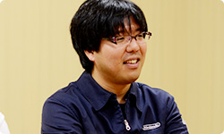 岩田 外国語だと、よくわからないですからね。 水木 はい、でも今回は手書きでコメントを掲載したり、 Miiのアイコンの表情を変えられたりして、 言葉に頼らないコミュニケーションが可能です。 そうした「何となく気持ちが伝わる仕組みにしたい」 ということを最初から考えていたので、 「いままで以上にゲームを通じて世界中の人と、 言語の壁を越えて交流してほしいなぁ」と 思っています。 岩田 はい、ありがとうございます。 わたしは『Miiverse』の登場前と登場後で、 「たとえ家でひとりきりで遊んでいたとしても、 ゲームを通じて“１人じゃない”と 共感しあえるようになる」ということが 最も大きな変化になるのではないか、と思っています。 自分と価値観を共有できる人に出会えて、 面白いゲームにどんどん出会えるようになって、 あるとき「本当に昔、これがなかったの？」 って言われるようにしたいなぁ、と思っています。 水木 本当にそうですね。 岩田 まあでも、ネットワークサービスは はじまってからが勝負なので、 本格開発はこれからですからね。 近藤 はい。スタートしてからということで（笑）。 岩田 頑張りましょう。 今日はありがとうございました。 一同 ありがとうございました。 3. ネットワーク方針の大転換 → Miiverse 開発スタッフ 篇
Wii U Chat 篇 New スーパーマリオブラザーズ U 篇 ZombiU（ゾンビU） 篇 Nintendo×JOYSOUND Wii カラオケ U 篇 Nintendo Land 篇 Nintendo TVii 篇 Wii Street U powered by Google 篇 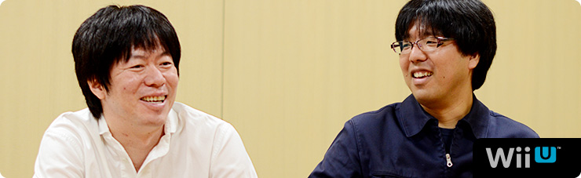 1. “共感ネットワーク” 2. ２階建てのサービス構造 3. ネットワーク方針の大転換 4. 「Wiiが街に」 岩田 一方で、今回、近藤さんは 任天堂と仕事をすることに対して、 どのように感じていましたか？ 近藤 そうですね。 うまく言えないんですけど、任天堂の方って、 意外と“ガツガツしている”というか・・・（笑）。 岩田 （笑）。少し表現を変えると、任天堂の人は 「このほうが、お客さんが喜ぶんじゃないか？」 っていうことに対して、手間をいとわず、 どん欲にやることを当たり前だと思っているんです。 だからみんながお客さんの視点になって考えて、 その商品について共感できるまで 突っ込んでいく人が多いんです。 水木 でも、はてなさんとは、 仕事に対する意識のギャップがほとんどなくて、 常に「お客さんはこのほうがうれしいだろう」って 同じ価値観で進めることができたと思います。 近藤さんとは、何回か決起集会をしたんですけど・・・。 岩田 え？ 決起集会って何回もするものなんですか？ 普通は１回でしょう（笑）。 水木 ええ？（笑） えっと・・・じゃあ “スタッフが増えたぞ集会”とか、 “デバッグがこれからはじまるぞ集会”とか・・・。 一同 （笑） 水木 まぁ、それはいいとして（笑）、 その集会のとき、 近藤さんが『うごメモ』の話をされていて、 開発の手間も、サーバー維持費もかかるとわかっていても、 「ここはプッシュだ！」といってガンガン突き進んでいって、 「ユーザーがもっと楽しめるようにどんどん開発すべきだ！」 ということを熱く語られていたことが、 すごく印象に残っているんです。 そういう価値観のはてなさんとだから、 すごくやりやすかったんです。 近藤 そう言っていただけると、非常にうれしいです。 「僕たちがネットワークサービスをつくることで、 なるべく世の中を前に進めていきたい」 ということを、常々社内で話しているんです。 あと、みんな任天堂のゲームが好きなので、 「僕たちの力でもっと前に進めることができれば それがいちばん楽しい」と思っています。 水木 そういう価値観で、 ガンガン突き進む近藤さんのイメージって、 ・・・あえて言いますよ？（笑） 殿が先に突っ走って、家来があとから追っかけながら 「と、殿、ご乱心をっ！」 みたいに止めるみたいな・・・。 そんな感じがしていました。 すみません！（笑） 一同 （笑） 岩田 でもね、何か新しいことをはじめるときって、 社内には「殿、ご乱心をっ！」って 思う人はいるものだと思いますよ。 近藤 そうですよね（笑）。 水木 確かに、僕らは『Miiverse』を推進する側でしたけど、 「ご、ご乱心をっ！」くらいに思っている人たちは 社内にもきっといたと思います。 岩田 いろんな人が、「運営が大変になりますよ」って、 ずいぶん心配していたと思います。 水木 はい。でも基本的にみなさん、 協力的に考えてくれて、 何かしらのかたちで応援してくれました。 「もっとこうあるべきじゃないか？」 といったアドバイスも含めて、 「進めることに反対」という意見はなかったです。 岩田 じゃあ、今日の最後に 『Miiverse』はゲームをどう変えると思うか、 近藤さんからいいですか？ 近藤 はい。僕が起動画面の 「わらわら広場」を見て感じたことは、 「ああ、Wiiが街になったなぁ」ということです。 いままで“家の中”くらいの範囲だったのが、 Wii Uで広がって、知っている人も知らない人も ワーッといるみたいな。そういう意味で、 本当に「わらわら広場」はびっくりしたんです。 実際、起動画面だけを見て楽しむような人が 多いんじゃないでしょうか。 「よく、カフェとかで人の雑踏を眺めるみたいに、 そういう楽しみも生まれるんじゃないか」 そう思っています。 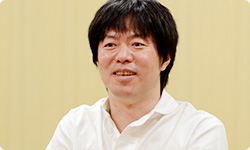 岩田 ちなみに、あれを起動画面にしたのは、 『Wiiの間』でどんなにおもてなしの準備をしていても、 起動していただかないことには目にも入らないことを、 わたしと水木さんが思い知ったからでもあるんです。 だから『Miiverse』では、 Wii Uの電源を入れただけで 何か起こるようにしたかったんですね。 水木 『Wiiの間』でも、 Miiが居間でくつろいでいる様子は、 お客さんにわりと気に入っていただけたみたいでした。 岩田 家族と離れて暮らしている人が、 『Wiiの間』の居間にいっしょにいる 大切な家族の姿を眺めることで、 癒やされたりしていたという声をいただいていました。 でも、今度はそれをもう一段、 ちょっと違うかたちでお見せできそうです。 近藤 あの、いわゆる“ソーシャル化”というのは、 ゲームの世界がインターネットでつながることによって、 一つひとつの娯楽やコンテンツに対して、 どう社会性を持たせていくのかが、 大きなテーマだと思うんです。 岩田 はい。ネットワークの向こう側に本当の人がいて、 しかも自分と価値観を共有する人がいたら、 「何が起こるか？」ということですね。 近藤 そうです。いままさに、 「任天堂のゲームが社会とつながって、 広がっていく革命的瞬間なんじゃないか？」 と、僕は思っています。 本質は“ゲームも面白いけど、人も面白い”ということで、 「人と楽しめるほうがもっと面白いかもしれない」 というお客さんに対する提案なんです。 これから『Miiverse』を使ってくれる方たちにとって、 「いちばん楽しんでもらえるものができた」と思うので、 その広がりをぜひ、楽しんでいただけるとうれしいです。 岩田 生粋のゲーム屋と、ゲームを愛するウェブ屋さんが 出会ったからこそ、生まれたサービスになりましたね。 近藤 はい（笑）。 水木 僕はですね、ゲームというのは 言語よりもプレイが優先されるものなので、 “世界がひとつになれる娯楽”だと思っているんです。 でもいままでは、少なくとも ゲーム機のネットワークは比較的言語主体で、 あまり国境を越えられていなかったと思うんです。 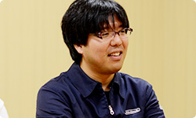 岩田 外国語だと、よくわからないですからね。 水木 はい、でも今回は手書きでコメントを掲載したり、 Miiのアイコンの表情を変えられたりして、 言葉に頼らないコミュニケーションが可能です。 そうした「何となく気持ちが伝わる仕組みにしたい」 ということを最初から考えていたので、 「いままで以上にゲームを通じて世界中の人と、 言語の壁を越えて交流してほしいなぁ」と 思っています。 岩田 はい、ありがとうございます。 わたしは『Miiverse』の登場前と登場後で、 「たとえ家でひとりきりで遊んでいたとしても、 ゲームを通じて“１人じゃない”と 共感しあえるようになる」ということが 最も大きな変化になるのではないか、と思っています。 自分と価値観を共有できる人に出会えて、 面白いゲームにどんどん出会えるようになって、 あるとき「本当に昔、これがなかったの？」 って言われるようにしたいなぁ、と思っています。 水木 本当にそうですね。 岩田 まあでも、ネットワークサービスは はじまってからが勝負なので、 本格開発はこれからですからね。 近藤 はい。スタートしてからということで（笑）。 岩田 頑張りましょう。 今日はありがとうございました。 一同 ありがとうございました。 3. ネットワーク方針の大転換 → Miiverse 開発スタッフ 篇
New スーパーマリオブラザーズ U 篇 ZombiU（ゾンビU） 篇 Nintendo×JOYSOUND Wii カラオケ U 篇 Nintendo Land 篇 Nintendo TVii 篇 Wii Street U powered by Google 篇 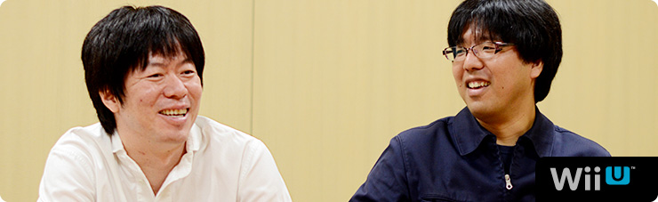 1. “共感ネットワーク” 2. ２階建てのサービス構造 3. ネットワーク方針の大転換 4. 「Wiiが街に」 岩田 一方で、今回、近藤さんは 任天堂と仕事をすることに対して、 どのように感じていましたか？ 近藤 そうですね。 うまく言えないんですけど、任天堂の方って、 意外と“ガツガツしている”というか・・・（笑）。 岩田 （笑）。少し表現を変えると、任天堂の人は 「このほうが、お客さんが喜ぶんじゃないか？」 っていうことに対して、手間をいとわず、 どん欲にやることを当たり前だと思っているんです。 だからみんながお客さんの視点になって考えて、 その商品について共感できるまで 突っ込んでいく人が多いんです。 水木 でも、はてなさんとは、 仕事に対する意識のギャップがほとんどなくて、 常に「お客さんはこのほうがうれしいだろう」って 同じ価値観で進めることができたと思います。 近藤さんとは、何回か決起集会をしたんですけど・・・。 岩田 え？ 決起集会って何回もするものなんですか？ 普通は１回でしょう（笑）。 水木 ええ？（笑） えっと・・・じゃあ “スタッフが増えたぞ集会”とか、 “デバッグがこれからはじまるぞ集会”とか・・・。 一同 （笑） 水木 まぁ、それはいいとして（笑）、 その集会のとき、 近藤さんが『うごメモ』の話をされていて、 開発の手間も、サーバー維持費もかかるとわかっていても、 「ここはプッシュだ！」といってガンガン突き進んでいって、 「ユーザーがもっと楽しめるようにどんどん開発すべきだ！」 ということを熱く語られていたことが、 すごく印象に残っているんです。 そういう価値観のはてなさんとだから、 すごくやりやすかったんです。 近藤 そう言っていただけると、非常にうれしいです。 「僕たちがネットワークサービスをつくることで、 なるべく世の中を前に進めていきたい」 ということを、常々社内で話しているんです。 あと、みんな任天堂のゲームが好きなので、 「僕たちの力でもっと前に進めることができれば それがいちばん楽しい」と思っています。 水木 そういう価値観で、 ガンガン突き進む近藤さんのイメージって、 ・・・あえて言いますよ？（笑） 殿が先に突っ走って、家来があとから追っかけながら 「と、殿、ご乱心をっ！」 みたいに止めるみたいな・・・。 そんな感じがしていました。 すみません！（笑） 一同 （笑） 岩田 でもね、何か新しいことをはじめるときって、 社内には「殿、ご乱心をっ！」って 思う人はいるものだと思いますよ。 近藤 そうですよね（笑）。 水木 確かに、僕らは『Miiverse』を推進する側でしたけど、 「ご、ご乱心をっ！」くらいに思っている人たちは 社内にもきっといたと思います。 岩田 いろんな人が、「運営が大変になりますよ」って、 ずいぶん心配していたと思います。 水木 はい。でも基本的にみなさん、 協力的に考えてくれて、 何かしらのかたちで応援してくれました。 「もっとこうあるべきじゃないか？」 といったアドバイスも含めて、 「進めることに反対」という意見はなかったです。 岩田 じゃあ、今日の最後に 『Miiverse』はゲームをどう変えると思うか、 近藤さんからいいですか？ 近藤 はい。僕が起動画面の 「わらわら広場」を見て感じたことは、 「ああ、Wiiが街になったなぁ」ということです。 いままで“家の中”くらいの範囲だったのが、 Wii Uで広がって、知っている人も知らない人も ワーッといるみたいな。そういう意味で、 本当に「わらわら広場」はびっくりしたんです。 実際、起動画面だけを見て楽しむような人が 多いんじゃないでしょうか。 「よく、カフェとかで人の雑踏を眺めるみたいに、 そういう楽しみも生まれるんじゃないか」 そう思っています。 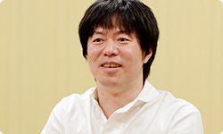 岩田 ちなみに、あれを起動画面にしたのは、 『Wiiの間』でどんなにおもてなしの準備をしていても、 起動していただかないことには目にも入らないことを、 わたしと水木さんが思い知ったからでもあるんです。 だから『Miiverse』では、 Wii Uの電源を入れただけで 何か起こるようにしたかったんですね。 水木 『Wiiの間』でも、 Miiが居間でくつろいでいる様子は、 お客さんにわりと気に入っていただけたみたいでした。 岩田 家族と離れて暮らしている人が、 『Wiiの間』の居間にいっしょにいる 大切な家族の姿を眺めることで、 癒やされたりしていたという声をいただいていました。 でも、今度はそれをもう一段、 ちょっと違うかたちでお見せできそうです。 近藤 あの、いわゆる“ソーシャル化”というのは、 ゲームの世界がインターネットでつながることによって、 一つひとつの娯楽やコンテンツに対して、 どう社会性を持たせていくのかが、 大きなテーマだと思うんです。 岩田 はい。ネットワークの向こう側に本当の人がいて、 しかも自分と価値観を共有する人がいたら、 「何が起こるか？」ということですね。 近藤 そうです。いままさに、 「任天堂のゲームが社会とつながって、 広がっていく革命的瞬間なんじゃないか？」 と、僕は思っています。 本質は“ゲームも面白いけど、人も面白い”ということで、 「人と楽しめるほうがもっと面白いかもしれない」 というお客さんに対する提案なんです。 これから『Miiverse』を使ってくれる方たちにとって、 「いちばん楽しんでもらえるものができた」と思うので、 その広がりをぜひ、楽しんでいただけるとうれしいです。 岩田 生粋のゲーム屋と、ゲームを愛するウェブ屋さんが 出会ったからこそ、生まれたサービスになりましたね。 近藤 はい（笑）。 水木 僕はですね、ゲームというのは 言語よりもプレイが優先されるものなので、 “世界がひとつになれる娯楽”だと思っているんです。 でもいままでは、少なくとも ゲーム機のネットワークは比較的言語主体で、 あまり国境を越えられていなかったと思うんです。 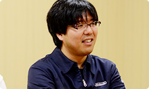 岩田 外国語だと、よくわからないですからね。 水木 はい、でも今回は手書きでコメントを掲載したり、 Miiのアイコンの表情を変えられたりして、 言葉に頼らないコミュニケーションが可能です。 そうした「何となく気持ちが伝わる仕組みにしたい」 ということを最初から考えていたので、 「いままで以上にゲームを通じて世界中の人と、 言語の壁を越えて交流してほしいなぁ」と 思っています。 岩田 はい、ありがとうございます。 わたしは『Miiverse』の登場前と登場後で、 「たとえ家でひとりきりで遊んでいたとしても、 ゲームを通じて“１人じゃない”と 共感しあえるようになる」ということが 最も大きな変化になるのではないか、と思っています。 自分と価値観を共有できる人に出会えて、 面白いゲームにどんどん出会えるようになって、 あるとき「本当に昔、これがなかったの？」 って言われるようにしたいなぁ、と思っています。 水木 本当にそうですね。 岩田 まあでも、ネットワークサービスは はじまってからが勝負なので、 本格開発はこれからですからね。 近藤 はい。スタートしてからということで（笑）。 岩田 頑張りましょう。 今日はありがとうございました。 一同 ありがとうございました。 3. ネットワーク方針の大転換 → Miiverse 開発スタッフ 篇
ZombiU（ゾンビU） 篇 Nintendo×JOYSOUND Wii カラオケ U 篇 Nintendo Land 篇 Nintendo TVii 篇 Wii Street U powered by Google 篇 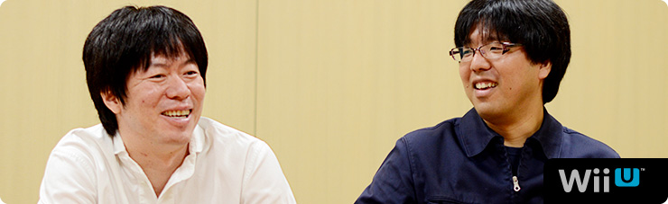 1. “共感ネットワーク” 2. ２階建てのサービス構造 3. ネットワーク方針の大転換 4. 「Wiiが街に」 岩田 一方で、今回、近藤さんは 任天堂と仕事をすることに対して、 どのように感じていましたか？ 近藤 そうですね。 うまく言えないんですけど、任天堂の方って、 意外と“ガツガツしている”というか・・・（笑）。 岩田 （笑）。少し表現を変えると、任天堂の人は 「このほうが、お客さんが喜ぶんじゃないか？」 っていうことに対して、手間をいとわず、 どん欲にやることを当たり前だと思っているんです。 だからみんながお客さんの視点になって考えて、 その商品について共感できるまで 突っ込んでいく人が多いんです。 水木 でも、はてなさんとは、 仕事に対する意識のギャップがほとんどなくて、 常に「お客さんはこのほうがうれしいだろう」って 同じ価値観で進めることができたと思います。 近藤さんとは、何回か決起集会をしたんですけど・・・。 岩田 え？ 決起集会って何回もするものなんですか？ 普通は１回でしょう（笑）。 水木 ええ？（笑） えっと・・・じゃあ “スタッフが増えたぞ集会”とか、 “デバッグがこれからはじまるぞ集会”とか・・・。 一同 （笑） 水木 まぁ、それはいいとして（笑）、 その集会のとき、 近藤さんが『うごメモ』の話をされていて、 開発の手間も、サーバー維持費もかかるとわかっていても、 「ここはプッシュだ！」といってガンガン突き進んでいって、 「ユーザーがもっと楽しめるようにどんどん開発すべきだ！」 ということを熱く語られていたことが、 すごく印象に残っているんです。 そういう価値観のはてなさんとだから、 すごくやりやすかったんです。 近藤 そう言っていただけると、非常にうれしいです。 「僕たちがネットワークサービスをつくることで、 なるべく世の中を前に進めていきたい」 ということを、常々社内で話しているんです。 あと、みんな任天堂のゲームが好きなので、 「僕たちの力でもっと前に進めることができれば それがいちばん楽しい」と思っています。 水木 そういう価値観で、 ガンガン突き進む近藤さんのイメージって、 ・・・あえて言いますよ？（笑） 殿が先に突っ走って、家来があとから追っかけながら 「と、殿、ご乱心をっ！」 みたいに止めるみたいな・・・。 そんな感じがしていました。 すみません！（笑） 一同 （笑） 岩田 でもね、何か新しいことをはじめるときって、 社内には「殿、ご乱心をっ！」って 思う人はいるものだと思いますよ。 近藤 そうですよね（笑）。 水木 確かに、僕らは『Miiverse』を推進する側でしたけど、 「ご、ご乱心をっ！」くらいに思っている人たちは 社内にもきっといたと思います。 岩田 いろんな人が、「運営が大変になりますよ」って、 ずいぶん心配していたと思います。 水木 はい。でも基本的にみなさん、 協力的に考えてくれて、 何かしらのかたちで応援してくれました。 「もっとこうあるべきじゃないか？」 といったアドバイスも含めて、 「進めることに反対」という意見はなかったです。 岩田 じゃあ、今日の最後に 『Miiverse』はゲームをどう変えると思うか、 近藤さんからいいですか？ 近藤 はい。僕が起動画面の 「わらわら広場」を見て感じたことは、 「ああ、Wiiが街になったなぁ」ということです。 いままで“家の中”くらいの範囲だったのが、 Wii Uで広がって、知っている人も知らない人も ワーッといるみたいな。そういう意味で、 本当に「わらわら広場」はびっくりしたんです。 実際、起動画面だけを見て楽しむような人が 多いんじゃないでしょうか。 「よく、カフェとかで人の雑踏を眺めるみたいに、 そういう楽しみも生まれるんじゃないか」 そう思っています。 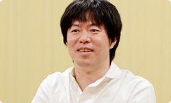 岩田 ちなみに、あれを起動画面にしたのは、 『Wiiの間』でどんなにおもてなしの準備をしていても、 起動していただかないことには目にも入らないことを、 わたしと水木さんが思い知ったからでもあるんです。 だから『Miiverse』では、 Wii Uの電源を入れただけで 何か起こるようにしたかったんですね。 水木 『Wiiの間』でも、 Miiが居間でくつろいでいる様子は、 お客さんにわりと気に入っていただけたみたいでした。 岩田 家族と離れて暮らしている人が、 『Wiiの間』の居間にいっしょにいる 大切な家族の姿を眺めることで、 癒やされたりしていたという声をいただいていました。 でも、今度はそれをもう一段、 ちょっと違うかたちでお見せできそうです。 近藤 あの、いわゆる“ソーシャル化”というのは、 ゲームの世界がインターネットでつながることによって、 一つひとつの娯楽やコンテンツに対して、 どう社会性を持たせていくのかが、 大きなテーマだと思うんです。 岩田 はい。ネットワークの向こう側に本当の人がいて、 しかも自分と価値観を共有する人がいたら、 「何が起こるか？」ということですね。 近藤 そうです。いままさに、 「任天堂のゲームが社会とつながって、 広がっていく革命的瞬間なんじゃないか？」 と、僕は思っています。 本質は“ゲームも面白いけど、人も面白い”ということで、 「人と楽しめるほうがもっと面白いかもしれない」 というお客さんに対する提案なんです。 これから『Miiverse』を使ってくれる方たちにとって、 「いちばん楽しんでもらえるものができた」と思うので、 その広がりをぜひ、楽しんでいただけるとうれしいです。 岩田 生粋のゲーム屋と、ゲームを愛するウェブ屋さんが 出会ったからこそ、生まれたサービスになりましたね。 近藤 はい（笑）。 水木 僕はですね、ゲームというのは 言語よりもプレイが優先されるものなので、 “世界がひとつになれる娯楽”だと思っているんです。 でもいままでは、少なくとも ゲーム機のネットワークは比較的言語主体で、 あまり国境を越えられていなかったと思うんです。 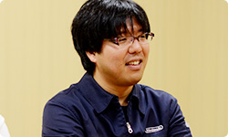 岩田 外国語だと、よくわからないですからね。 水木 はい、でも今回は手書きでコメントを掲載したり、 Miiのアイコンの表情を変えられたりして、 言葉に頼らないコミュニケーションが可能です。 そうした「何となく気持ちが伝わる仕組みにしたい」 ということを最初から考えていたので、 「いままで以上にゲームを通じて世界中の人と、 言語の壁を越えて交流してほしいなぁ」と 思っています。 岩田 はい、ありがとうございます。 わたしは『Miiverse』の登場前と登場後で、 「たとえ家でひとりきりで遊んでいたとしても、 ゲームを通じて“１人じゃない”と 共感しあえるようになる」ということが 最も大きな変化になるのではないか、と思っています。 自分と価値観を共有できる人に出会えて、 面白いゲームにどんどん出会えるようになって、 あるとき「本当に昔、これがなかったの？」 って言われるようにしたいなぁ、と思っています。 水木 本当にそうですね。 岩田 まあでも、ネットワークサービスは はじまってからが勝負なので、 本格開発はこれからですからね。 近藤 はい。スタートしてからということで（笑）。 岩田 頑張りましょう。 今日はありがとうございました。 一同 ありがとうございました。 3. ネットワーク方針の大転換 → Miiverse 開発スタッフ 篇
Nintendo×JOYSOUND Wii カラオケ U 篇 Nintendo Land 篇 Nintendo TVii 篇 Wii Street U powered by Google 篇 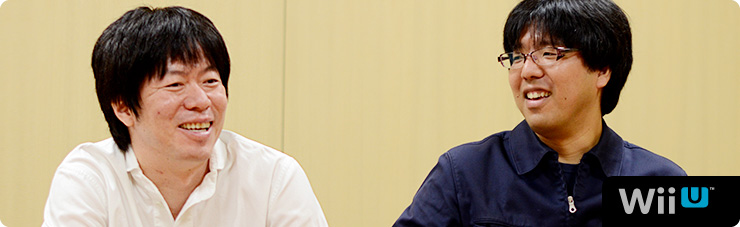 1. “共感ネットワーク” 2. ２階建てのサービス構造 3. ネットワーク方針の大転換 4. 「Wiiが街に」 岩田 一方で、今回、近藤さんは 任天堂と仕事をすることに対して、 どのように感じていましたか？ 近藤 そうですね。 うまく言えないんですけど、任天堂の方って、 意外と“ガツガツしている”というか・・・（笑）。 岩田 （笑）。少し表現を変えると、任天堂の人は 「このほうが、お客さんが喜ぶんじゃないか？」 っていうことに対して、手間をいとわず、 どん欲にやることを当たり前だと思っているんです。 だからみんながお客さんの視点になって考えて、 その商品について共感できるまで 突っ込んでいく人が多いんです。 水木 でも、はてなさんとは、 仕事に対する意識のギャップがほとんどなくて、 常に「お客さんはこのほうがうれしいだろう」って 同じ価値観で進めることができたと思います。 近藤さんとは、何回か決起集会をしたんですけど・・・。 岩田 え？ 決起集会って何回もするものなんですか？ 普通は１回でしょう（笑）。 水木 ええ？（笑） えっと・・・じゃあ “スタッフが増えたぞ集会”とか、 “デバッグがこれからはじまるぞ集会”とか・・・。 一同 （笑） 水木 まぁ、それはいいとして（笑）、 その集会のとき、 近藤さんが『うごメモ』の話をされていて、 開発の手間も、サーバー維持費もかかるとわかっていても、 「ここはプッシュだ！」といってガンガン突き進んでいって、 「ユーザーがもっと楽しめるようにどんどん開発すべきだ！」 ということを熱く語られていたことが、 すごく印象に残っているんです。 そういう価値観のはてなさんとだから、 すごくやりやすかったんです。 近藤 そう言っていただけると、非常にうれしいです。 「僕たちがネットワークサービスをつくることで、 なるべく世の中を前に進めていきたい」 ということを、常々社内で話しているんです。 あと、みんな任天堂のゲームが好きなので、 「僕たちの力でもっと前に進めることができれば それがいちばん楽しい」と思っています。 水木 そういう価値観で、 ガンガン突き進む近藤さんのイメージって、 ・・・あえて言いますよ？（笑） 殿が先に突っ走って、家来があとから追っかけながら 「と、殿、ご乱心をっ！」 みたいに止めるみたいな・・・。 そんな感じがしていました。 すみません！（笑） 一同 （笑） 岩田 でもね、何か新しいことをはじめるときって、 社内には「殿、ご乱心をっ！」って 思う人はいるものだと思いますよ。 近藤 そうですよね（笑）。 水木 確かに、僕らは『Miiverse』を推進する側でしたけど、 「ご、ご乱心をっ！」くらいに思っている人たちは 社内にもきっといたと思います。 岩田 いろんな人が、「運営が大変になりますよ」って、 ずいぶん心配していたと思います。 水木 はい。でも基本的にみなさん、 協力的に考えてくれて、 何かしらのかたちで応援してくれました。 「もっとこうあるべきじゃないか？」 といったアドバイスも含めて、 「進めることに反対」という意見はなかったです。 岩田 じゃあ、今日の最後に 『Miiverse』はゲームをどう変えると思うか、 近藤さんからいいですか？ 近藤 はい。僕が起動画面の 「わらわら広場」を見て感じたことは、 「ああ、Wiiが街になったなぁ」ということです。 いままで“家の中”くらいの範囲だったのが、 Wii Uで広がって、知っている人も知らない人も ワーッといるみたいな。そういう意味で、 本当に「わらわら広場」はびっくりしたんです。 実際、起動画面だけを見て楽しむような人が 多いんじゃないでしょうか。 「よく、カフェとかで人の雑踏を眺めるみたいに、 そういう楽しみも生まれるんじゃないか」 そう思っています。 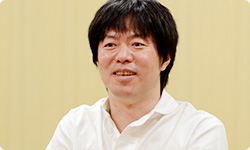 岩田 ちなみに、あれを起動画面にしたのは、 『Wiiの間』でどんなにおもてなしの準備をしていても、 起動していただかないことには目にも入らないことを、 わたしと水木さんが思い知ったからでもあるんです。 だから『Miiverse』では、 Wii Uの電源を入れただけで 何か起こるようにしたかったんですね。 水木 『Wiiの間』でも、 Miiが居間でくつろいでいる様子は、 お客さんにわりと気に入っていただけたみたいでした。 岩田 家族と離れて暮らしている人が、 『Wiiの間』の居間にいっしょにいる 大切な家族の姿を眺めることで、 癒やされたりしていたという声をいただいていました。 でも、今度はそれをもう一段、 ちょっと違うかたちでお見せできそうです。 近藤 あの、いわゆる“ソーシャル化”というのは、 ゲームの世界がインターネットでつながることによって、 一つひとつの娯楽やコンテンツに対して、 どう社会性を持たせていくのかが、 大きなテーマだと思うんです。 岩田 はい。ネットワークの向こう側に本当の人がいて、 しかも自分と価値観を共有する人がいたら、 「何が起こるか？」ということですね。 近藤 そうです。いままさに、 「任天堂のゲームが社会とつながって、 広がっていく革命的瞬間なんじゃないか？」 と、僕は思っています。 本質は“ゲームも面白いけど、人も面白い”ということで、 「人と楽しめるほうがもっと面白いかもしれない」 というお客さんに対する提案なんです。 これから『Miiverse』を使ってくれる方たちにとって、 「いちばん楽しんでもらえるものができた」と思うので、 その広がりをぜひ、楽しんでいただけるとうれしいです。 岩田 生粋のゲーム屋と、ゲームを愛するウェブ屋さんが 出会ったからこそ、生まれたサービスになりましたね。 近藤 はい（笑）。 水木 僕はですね、ゲームというのは 言語よりもプレイが優先されるものなので、 “世界がひとつになれる娯楽”だと思っているんです。 でもいままでは、少なくとも ゲーム機のネットワークは比較的言語主体で、 あまり国境を越えられていなかったと思うんです。 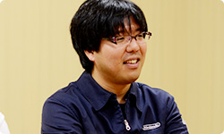 岩田 外国語だと、よくわからないですからね。 水木 はい、でも今回は手書きでコメントを掲載したり、 Miiのアイコンの表情を変えられたりして、 言葉に頼らないコミュニケーションが可能です。 そうした「何となく気持ちが伝わる仕組みにしたい」 ということを最初から考えていたので、 「いままで以上にゲームを通じて世界中の人と、 言語の壁を越えて交流してほしいなぁ」と 思っています。 岩田 はい、ありがとうございます。 わたしは『Miiverse』の登場前と登場後で、 「たとえ家でひとりきりで遊んでいたとしても、 ゲームを通じて“１人じゃない”と 共感しあえるようになる」ということが 最も大きな変化になるのではないか、と思っています。 自分と価値観を共有できる人に出会えて、 面白いゲームにどんどん出会えるようになって、 あるとき「本当に昔、これがなかったの？」 って言われるようにしたいなぁ、と思っています。 水木 本当にそうですね。 岩田 まあでも、ネットワークサービスは はじまってからが勝負なので、 本格開発はこれからですからね。 近藤 はい。スタートしてからということで（笑）。 岩田 頑張りましょう。 今日はありがとうございました。 一同 ありがとうございました。 3. ネットワーク方針の大転換 → Miiverse 開発スタッフ 篇
Nintendo Land 篇 Nintendo TVii 篇 Wii Street U powered by Google 篇 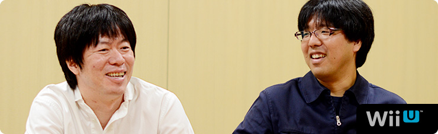 1. “共感ネットワーク” 2. ２階建てのサービス構造 3. ネットワーク方針の大転換 4. 「Wiiが街に」 岩田 一方で、今回、近藤さんは 任天堂と仕事をすることに対して、 どのように感じていましたか？ 近藤 そうですね。 うまく言えないんですけど、任天堂の方って、 意外と“ガツガツしている”というか・・・（笑）。 岩田 （笑）。少し表現を変えると、任天堂の人は 「このほうが、お客さんが喜ぶんじゃないか？」 っていうことに対して、手間をいとわず、 どん欲にやることを当たり前だと思っているんです。 だからみんながお客さんの視点になって考えて、 その商品について共感できるまで 突っ込んでいく人が多いんです。 水木 でも、はてなさんとは、 仕事に対する意識のギャップがほとんどなくて、 常に「お客さんはこのほうがうれしいだろう」って 同じ価値観で進めることができたと思います。 近藤さんとは、何回か決起集会をしたんですけど・・・。 岩田 え？ 決起集会って何回もするものなんですか？ 普通は１回でしょう（笑）。 水木 ええ？（笑） えっと・・・じゃあ “スタッフが増えたぞ集会”とか、 “デバッグがこれからはじまるぞ集会”とか・・・。 一同 （笑） 水木 まぁ、それはいいとして（笑）、 その集会のとき、 近藤さんが『うごメモ』の話をされていて、 開発の手間も、サーバー維持費もかかるとわかっていても、 「ここはプッシュだ！」といってガンガン突き進んでいって、 「ユーザーがもっと楽しめるようにどんどん開発すべきだ！」 ということを熱く語られていたことが、 すごく印象に残っているんです。 そういう価値観のはてなさんとだから、 すごくやりやすかったんです。 近藤 そう言っていただけると、非常にうれしいです。 「僕たちがネットワークサービスをつくることで、 なるべく世の中を前に進めていきたい」 ということを、常々社内で話しているんです。 あと、みんな任天堂のゲームが好きなので、 「僕たちの力でもっと前に進めることができれば それがいちばん楽しい」と思っています。 水木 そういう価値観で、 ガンガン突き進む近藤さんのイメージって、 ・・・あえて言いますよ？（笑） 殿が先に突っ走って、家来があとから追っかけながら 「と、殿、ご乱心をっ！」 みたいに止めるみたいな・・・。 そんな感じがしていました。 すみません！（笑） 一同 （笑） 岩田 でもね、何か新しいことをはじめるときって、 社内には「殿、ご乱心をっ！」って 思う人はいるものだと思いますよ。 近藤 そうですよね（笑）。 水木 確かに、僕らは『Miiverse』を推進する側でしたけど、 「ご、ご乱心をっ！」くらいに思っている人たちは 社内にもきっといたと思います。 岩田 いろんな人が、「運営が大変になりますよ」って、 ずいぶん心配していたと思います。 水木 はい。でも基本的にみなさん、 協力的に考えてくれて、 何かしらのかたちで応援してくれました。 「もっとこうあるべきじゃないか？」 といったアドバイスも含めて、 「進めることに反対」という意見はなかったです。 岩田 じゃあ、今日の最後に 『Miiverse』はゲームをどう変えると思うか、 近藤さんからいいですか？ 近藤 はい。僕が起動画面の 「わらわら広場」を見て感じたことは、 「ああ、Wiiが街になったなぁ」ということです。 いままで“家の中”くらいの範囲だったのが、 Wii Uで広がって、知っている人も知らない人も ワーッといるみたいな。そういう意味で、 本当に「わらわら広場」はびっくりしたんです。 実際、起動画面だけを見て楽しむような人が 多いんじゃないでしょうか。 「よく、カフェとかで人の雑踏を眺めるみたいに、 そういう楽しみも生まれるんじゃないか」 そう思っています。 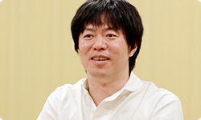 岩田 ちなみに、あれを起動画面にしたのは、 『Wiiの間』でどんなにおもてなしの準備をしていても、 起動していただかないことには目にも入らないことを、 わたしと水木さんが思い知ったからでもあるんです。 だから『Miiverse』では、 Wii Uの電源を入れただけで 何か起こるようにしたかったんですね。 水木 『Wiiの間』でも、 Miiが居間でくつろいでいる様子は、 お客さんにわりと気に入っていただけたみたいでした。 岩田 家族と離れて暮らしている人が、 『Wiiの間』の居間にいっしょにいる 大切な家族の姿を眺めることで、 癒やされたりしていたという声をいただいていました。 でも、今度はそれをもう一段、 ちょっと違うかたちでお見せできそうです。 近藤 あの、いわゆる“ソーシャル化”というのは、 ゲームの世界がインターネットでつながることによって、 一つひとつの娯楽やコンテンツに対して、 どう社会性を持たせていくのかが、 大きなテーマだと思うんです。 岩田 はい。ネットワークの向こう側に本当の人がいて、 しかも自分と価値観を共有する人がいたら、 「何が起こるか？」ということですね。 近藤 そうです。いままさに、 「任天堂のゲームが社会とつながって、 広がっていく革命的瞬間なんじゃないか？」 と、僕は思っています。 本質は“ゲームも面白いけど、人も面白い”ということで、 「人と楽しめるほうがもっと面白いかもしれない」 というお客さんに対する提案なんです。 これから『Miiverse』を使ってくれる方たちにとって、 「いちばん楽しんでもらえるものができた」と思うので、 その広がりをぜひ、楽しんでいただけるとうれしいです。 岩田 生粋のゲーム屋と、ゲームを愛するウェブ屋さんが 出会ったからこそ、生まれたサービスになりましたね。 近藤 はい（笑）。 水木 僕はですね、ゲームというのは 言語よりもプレイが優先されるものなので、 “世界がひとつになれる娯楽”だと思っているんです。 でもいままでは、少なくとも ゲーム機のネットワークは比較的言語主体で、 あまり国境を越えられていなかったと思うんです。 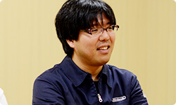 岩田 外国語だと、よくわからないですからね。 水木 はい、でも今回は手書きでコメントを掲載したり、 Miiのアイコンの表情を変えられたりして、 言葉に頼らないコミュニケーションが可能です。 そうした「何となく気持ちが伝わる仕組みにしたい」 ということを最初から考えていたので、 「いままで以上にゲームを通じて世界中の人と、 言語の壁を越えて交流してほしいなぁ」と 思っています。 岩田 はい、ありがとうございます。 わたしは『Miiverse』の登場前と登場後で、 「たとえ家でひとりきりで遊んでいたとしても、 ゲームを通じて“１人じゃない”と 共感しあえるようになる」ということが 最も大きな変化になるのではないか、と思っています。 自分と価値観を共有できる人に出会えて、 面白いゲームにどんどん出会えるようになって、 あるとき「本当に昔、これがなかったの？」 って言われるようにしたいなぁ、と思っています。 水木 本当にそうですね。 岩田 まあでも、ネットワークサービスは はじまってからが勝負なので、 本格開発はこれからですからね。 近藤 はい。スタートしてからということで（笑）。 岩田 頑張りましょう。 今日はありがとうございました。 一同 ありがとうございました。 3. ネットワーク方針の大転換 → Miiverse 開発スタッフ 篇
Nintendo TVii 篇 Wii Street U powered by Google 篇 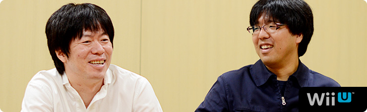 1. “共感ネットワーク” 2. ２階建てのサービス構造 3. ネットワーク方針の大転換 4. 「Wiiが街に」 岩田 一方で、今回、近藤さんは 任天堂と仕事をすることに対して、 どのように感じていましたか？ 近藤 そうですね。 うまく言えないんですけど、任天堂の方って、 意外と“ガツガツしている”というか・・・（笑）。 岩田 （笑）。少し表現を変えると、任天堂の人は 「このほうが、お客さんが喜ぶんじゃないか？」 っていうことに対して、手間をいとわず、 どん欲にやることを当たり前だと思っているんです。 だからみんながお客さんの視点になって考えて、 その商品について共感できるまで 突っ込んでいく人が多いんです。 水木 でも、はてなさんとは、 仕事に対する意識のギャップがほとんどなくて、 常に「お客さんはこのほうがうれしいだろう」って 同じ価値観で進めることができたと思います。 近藤さんとは、何回か決起集会をしたんですけど・・・。 岩田 え？ 決起集会って何回もするものなんですか？ 普通は１回でしょう（笑）。 水木 ええ？（笑） えっと・・・じゃあ “スタッフが増えたぞ集会”とか、 “デバッグがこれからはじまるぞ集会”とか・・・。 一同 （笑） 水木 まぁ、それはいいとして（笑）、 その集会のとき、 近藤さんが『うごメモ』の話をされていて、 開発の手間も、サーバー維持費もかかるとわかっていても、 「ここはプッシュだ！」といってガンガン突き進んでいって、 「ユーザーがもっと楽しめるようにどんどん開発すべきだ！」 ということを熱く語られていたことが、 すごく印象に残っているんです。 そういう価値観のはてなさんとだから、 すごくやりやすかったんです。 近藤 そう言っていただけると、非常にうれしいです。 「僕たちがネットワークサービスをつくることで、 なるべく世の中を前に進めていきたい」 ということを、常々社内で話しているんです。 あと、みんな任天堂のゲームが好きなので、 「僕たちの力でもっと前に進めることができれば それがいちばん楽しい」と思っています。 水木 そういう価値観で、 ガンガン突き進む近藤さんのイメージって、 ・・・あえて言いますよ？（笑） 殿が先に突っ走って、家来があとから追っかけながら 「と、殿、ご乱心をっ！」 みたいに止めるみたいな・・・。 そんな感じがしていました。 すみません！（笑） 一同 （笑） 岩田 でもね、何か新しいことをはじめるときって、 社内には「殿、ご乱心をっ！」って 思う人はいるものだと思いますよ。 近藤 そうですよね（笑）。 水木 確かに、僕らは『Miiverse』を推進する側でしたけど、 「ご、ご乱心をっ！」くらいに思っている人たちは 社内にもきっといたと思います。 岩田 いろんな人が、「運営が大変になりますよ」って、 ずいぶん心配していたと思います。 水木 はい。でも基本的にみなさん、 協力的に考えてくれて、 何かしらのかたちで応援してくれました。 「もっとこうあるべきじゃないか？」 といったアドバイスも含めて、 「進めることに反対」という意見はなかったです。 岩田 じゃあ、今日の最後に 『Miiverse』はゲームをどう変えると思うか、 近藤さんからいいですか？ 近藤 はい。僕が起動画面の 「わらわら広場」を見て感じたことは、 「ああ、Wiiが街になったなぁ」ということです。 いままで“家の中”くらいの範囲だったのが、 Wii Uで広がって、知っている人も知らない人も ワーッといるみたいな。そういう意味で、 本当に「わらわら広場」はびっくりしたんです。 実際、起動画面だけを見て楽しむような人が 多いんじゃないでしょうか。 「よく、カフェとかで人の雑踏を眺めるみたいに、 そういう楽しみも生まれるんじゃないか」 そう思っています。 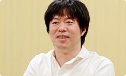 岩田 ちなみに、あれを起動画面にしたのは、 『Wiiの間』でどんなにおもてなしの準備をしていても、 起動していただかないことには目にも入らないことを、 わたしと水木さんが思い知ったからでもあるんです。 だから『Miiverse』では、 Wii Uの電源を入れただけで 何か起こるようにしたかったんですね。 水木 『Wiiの間』でも、 Miiが居間でくつろいでいる様子は、 お客さんにわりと気に入っていただけたみたいでした。 岩田 家族と離れて暮らしている人が、 『Wiiの間』の居間にいっしょにいる 大切な家族の姿を眺めることで、 癒やされたりしていたという声をいただいていました。 でも、今度はそれをもう一段、 ちょっと違うかたちでお見せできそうです。 近藤 あの、いわゆる“ソーシャル化”というのは、 ゲームの世界がインターネットでつながることによって、 一つひとつの娯楽やコンテンツに対して、 どう社会性を持たせていくのかが、 大きなテーマだと思うんです。 岩田 はい。ネットワークの向こう側に本当の人がいて、 しかも自分と価値観を共有する人がいたら、 「何が起こるか？」ということですね。 近藤 そうです。いままさに、 「任天堂のゲームが社会とつながって、 広がっていく革命的瞬間なんじゃないか？」 と、僕は思っています。 本質は“ゲームも面白いけど、人も面白い”ということで、 「人と楽しめるほうがもっと面白いかもしれない」 というお客さんに対する提案なんです。 これから『Miiverse』を使ってくれる方たちにとって、 「いちばん楽しんでもらえるものができた」と思うので、 その広がりをぜひ、楽しんでいただけるとうれしいです。 岩田 生粋のゲーム屋と、ゲームを愛するウェブ屋さんが 出会ったからこそ、生まれたサービスになりましたね。 近藤 はい（笑）。 水木 僕はですね、ゲームというのは 言語よりもプレイが優先されるものなので、 “世界がひとつになれる娯楽”だと思っているんです。 でもいままでは、少なくとも ゲーム機のネットワークは比較的言語主体で、 あまり国境を越えられていなかったと思うんです。 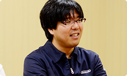 岩田 外国語だと、よくわからないですからね。 水木 はい、でも今回は手書きでコメントを掲載したり、 Miiのアイコンの表情を変えられたりして、 言葉に頼らないコミュニケーションが可能です。 そうした「何となく気持ちが伝わる仕組みにしたい」 ということを最初から考えていたので、 「いままで以上にゲームを通じて世界中の人と、 言語の壁を越えて交流してほしいなぁ」と 思っています。 岩田 はい、ありがとうございます。 わたしは『Miiverse』の登場前と登場後で、 「たとえ家でひとりきりで遊んでいたとしても、 ゲームを通じて“１人じゃない”と 共感しあえるようになる」ということが 最も大きな変化になるのではないか、と思っています。 自分と価値観を共有できる人に出会えて、 面白いゲームにどんどん出会えるようになって、 あるとき「本当に昔、これがなかったの？」 って言われるようにしたいなぁ、と思っています。 水木 本当にそうですね。 岩田 まあでも、ネットワークサービスは はじまってからが勝負なので、 本格開発はこれからですからね。 近藤 はい。スタートしてからということで（笑）。 岩田 頑張りましょう。 今日はありがとうございました。 一同 ありがとうございました。 3. ネットワーク方針の大転換 → Miiverse 開発スタッフ 篇
Wii Street U powered by Google 篇 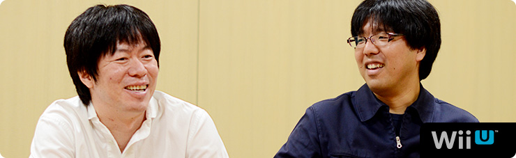 1. “共感ネットワーク” 2. ２階建てのサービス構造 3. ネットワーク方針の大転換 4. 「Wiiが街に」 岩田 一方で、今回、近藤さんは 任天堂と仕事をすることに対して、 どのように感じていましたか？ 近藤 そうですね。 うまく言えないんですけど、任天堂の方って、 意外と“ガツガツしている”というか・・・（笑）。 岩田 （笑）。少し表現を変えると、任天堂の人は 「このほうが、お客さんが喜ぶんじゃないか？」 っていうことに対して、手間をいとわず、 どん欲にやることを当たり前だと思っているんです。 だからみんながお客さんの視点になって考えて、 その商品について共感できるまで 突っ込んでいく人が多いんです。 水木 でも、はてなさんとは、 仕事に対する意識のギャップがほとんどなくて、 常に「お客さんはこのほうがうれしいだろう」って 同じ価値観で進めることができたと思います。 近藤さんとは、何回か決起集会をしたんですけど・・・。 岩田 え？ 決起集会って何回もするものなんですか？ 普通は１回でしょう（笑）。 水木 ええ？（笑） えっと・・・じゃあ “スタッフが増えたぞ集会”とか、 “デバッグがこれからはじまるぞ集会”とか・・・。 一同 （笑） 水木 まぁ、それはいいとして（笑）、 その集会のとき、 近藤さんが『うごメモ』の話をされていて、 開発の手間も、サーバー維持費もかかるとわかっていても、 「ここはプッシュだ！」といってガンガン突き進んでいって、 「ユーザーがもっと楽しめるようにどんどん開発すべきだ！」 ということを熱く語られていたことが、 すごく印象に残っているんです。 そういう価値観のはてなさんとだから、 すごくやりやすかったんです。 近藤 そう言っていただけると、非常にうれしいです。 「僕たちがネットワークサービスをつくることで、 なるべく世の中を前に進めていきたい」 ということを、常々社内で話しているんです。 あと、みんな任天堂のゲームが好きなので、 「僕たちの力でもっと前に進めることができれば それがいちばん楽しい」と思っています。 水木 そういう価値観で、 ガンガン突き進む近藤さんのイメージって、 ・・・あえて言いますよ？（笑） 殿が先に突っ走って、家来があとから追っかけながら 「と、殿、ご乱心をっ！」 みたいに止めるみたいな・・・。 そんな感じがしていました。 すみません！（笑） 一同 （笑） 岩田 でもね、何か新しいことをはじめるときって、 社内には「殿、ご乱心をっ！」って 思う人はいるものだと思いますよ。 近藤 そうですよね（笑）。 水木 確かに、僕らは『Miiverse』を推進する側でしたけど、 「ご、ご乱心をっ！」くらいに思っている人たちは 社内にもきっといたと思います。 岩田 いろんな人が、「運営が大変になりますよ」って、 ずいぶん心配していたと思います。 水木 はい。でも基本的にみなさん、 協力的に考えてくれて、 何かしらのかたちで応援してくれました。 「もっとこうあるべきじゃないか？」 といったアドバイスも含めて、 「進めることに反対」という意見はなかったです。 岩田 じゃあ、今日の最後に 『Miiverse』はゲームをどう変えると思うか、 近藤さんからいいですか？ 近藤 はい。僕が起動画面の 「わらわら広場」を見て感じたことは、 「ああ、Wiiが街になったなぁ」ということです。 いままで“家の中”くらいの範囲だったのが、 Wii Uで広がって、知っている人も知らない人も ワーッといるみたいな。そういう意味で、 本当に「わらわら広場」はびっくりしたんです。 実際、起動画面だけを見て楽しむような人が 多いんじゃないでしょうか。 「よく、カフェとかで人の雑踏を眺めるみたいに、 そういう楽しみも生まれるんじゃないか」 そう思っています。 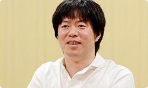 岩田 ちなみに、あれを起動画面にしたのは、 『Wiiの間』でどんなにおもてなしの準備をしていても、 起動していただかないことには目にも入らないことを、 わたしと水木さんが思い知ったからでもあるんです。 だから『Miiverse』では、 Wii Uの電源を入れただけで 何か起こるようにしたかったんですね。 水木 『Wiiの間』でも、 Miiが居間でくつろいでいる様子は、 お客さんにわりと気に入っていただけたみたいでした。 岩田 家族と離れて暮らしている人が、 『Wiiの間』の居間にいっしょにいる 大切な家族の姿を眺めることで、 癒やされたりしていたという声をいただいていました。 でも、今度はそれをもう一段、 ちょっと違うかたちでお見せできそうです。 近藤 あの、いわゆる“ソーシャル化”というのは、 ゲームの世界がインターネットでつながることによって、 一つひとつの娯楽やコンテンツに対して、 どう社会性を持たせていくのかが、 大きなテーマだと思うんです。 岩田 はい。ネットワークの向こう側に本当の人がいて、 しかも自分と価値観を共有する人がいたら、 「何が起こるか？」ということですね。 近藤 そうです。いままさに、 「任天堂のゲームが社会とつながって、 広がっていく革命的瞬間なんじゃないか？」 と、僕は思っています。 本質は“ゲームも面白いけど、人も面白い”ということで、 「人と楽しめるほうがもっと面白いかもしれない」 というお客さんに対する提案なんです。 これから『Miiverse』を使ってくれる方たちにとって、 「いちばん楽しんでもらえるものができた」と思うので、 その広がりをぜひ、楽しんでいただけるとうれしいです。 岩田 生粋のゲーム屋と、ゲームを愛するウェブ屋さんが 出会ったからこそ、生まれたサービスになりましたね。 近藤 はい（笑）。 水木 僕はですね、ゲームというのは 言語よりもプレイが優先されるものなので、 “世界がひとつになれる娯楽”だと思っているんです。 でもいままでは、少なくとも ゲーム機のネットワークは比較的言語主体で、 あまり国境を越えられていなかったと思うんです。 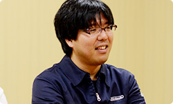 岩田 外国語だと、よくわからないですからね。 水木 はい、でも今回は手書きでコメントを掲載したり、 Miiのアイコンの表情を変えられたりして、 言葉に頼らないコミュニケーションが可能です。 そうした「何となく気持ちが伝わる仕組みにしたい」 ということを最初から考えていたので、 「いままで以上にゲームを通じて世界中の人と、 言語の壁を越えて交流してほしいなぁ」と 思っています。 岩田 はい、ありがとうございます。 わたしは『Miiverse』の登場前と登場後で、 「たとえ家でひとりきりで遊んでいたとしても、 ゲームを通じて“１人じゃない”と 共感しあえるようになる」ということが 最も大きな変化になるのではないか、と思っています。 自分と価値観を共有できる人に出会えて、 面白いゲームにどんどん出会えるようになって、 あるとき「本当に昔、これがなかったの？」 って言われるようにしたいなぁ、と思っています。 水木 本当にそうですね。 岩田 まあでも、ネットワークサービスは はじまってからが勝負なので、 本格開発はこれからですからね。 近藤 はい。スタートしてからということで（笑）。 岩田 頑張りましょう。 今日はありがとうございました。 一同 ありがとうございました。 3. ネットワーク方針の大転換 → Miiverse 開発スタッフ 篇
1. “共感ネットワーク”
2. ２階建てのサービス構造
3. ネットワーク方針の大転換
4. 「Wiiが街に」